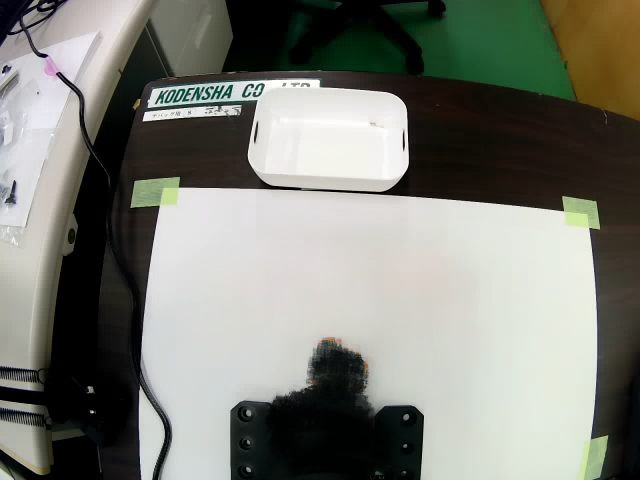

基準画像を半透明で重ねています。透明度
矢印の拡大 倍

点線の枠=測定に使う机の範囲。丸=キューブの5か所(学習時の位置)。矢印=その位置を合わせるために、映像を動かす向き(拡大表示)。
読み込み中…
| 位置 | ずれ | 判定 |
|---|
動かす向きの目安
| 回転 | - | |
| 横 | - | |
| 縦 | - | |
| 大きさ | - |
判定は、5か所すべてのずれが基準(px)以内なら OK。机の範囲(点線の枠)の特徴点だけで、回転・移動・拡大を求めます。カメラの前後左右の傾きは測れません(射影変換は、机の中央に特徴点が少なく、推定が揺れて使えませんでした)。